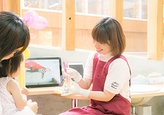

こどもの歯科治療の流れFlow
「こどもの治療、どんな風に進んでいくの？」お子さまをはじめて歯医者に連れて行くお母さま・お父さまは、お子さま以上に不安をお持ちかもしれません。こちらでは佐賀県鳥栖市の歯医者「みらい歯科・こども矯正歯科」が、当院におけるこどもの歯科治療の流れをご紹介します。
当院はこどもに対する治療実績が豊富です。やさしい診療を心がけていますので、安心してお子さまをお連れください。
- Step 1初診・カウンセリング
-
当院では、まずお子さまに医院の雰囲気に慣れていただくことを重視し、丁寧なカウンセリングを行っています。お子さまに「歯医者はこわい場所」というイメージがついてしまうと、その後の治療も難しくなってしまうからです。
そのため、お子さまを押さえつけて無理に治療をするようなことは決してしていません。お子さまが自然と治療に向き合えるようになるまでじっくりと練習を重ね、タイミングを待って治療を開始します。
- Step 2年齢に合わせた診療
-

当院ではお子さまに安心して診療を受けていただくために、年齢に合わせて独自の診療スタイルをとっています。たとえば3歳以下のお子さまの場合、基本的にお母さま・お父さまのおひざの上で診療を行っていますのでご協力ください。
また一定年齢以上のお子さまの場合には、初診時にレントゲン撮影を行います。
※低年齢児（4歳以下）の方は、午前中にご来院いただくことをおすすめしています。
- Step 32回目の診療～検査～
-
むし歯は歯と歯の間にできることも多く、目視だけでは見つけられないものも少なくありません。そこで6カ月に1度はレントゲン撮影が必要です。小さなお子さまも、2回目の診療時に小さな範囲でレントゲンを撮影します。
ほかにも、次のことを行いお子さまの大切な歯をむし歯から守ります。
※表は左右にスクロールして確認することができます。
歯磨き指導 歯肉炎検査 ダイアグノデント検査 お口の汚れをしっかり落とせるよう、正しい歯磨きの方法を指導します。お子さまの歯並びや成長に合った磨き方はもちろん、仕上げ磨きの方法もお教えします。
歯肉炎は、お子さまもかかる病気です。歯ぐきが腫れていないか、出血していないかなどの検査を行います。
ダイアグノデントとは、レーザー光を歯に当てることでむし歯を見つけ、進行度を数値化する機器です。目視では見つけにくい小さなむし歯も見逃しません。
- Step 4治療への準備～治療
-
お子さまにむし歯治療が必要な場合にも、当院ではすぐに治療を開始することはありません。まず医院の雰囲気や器具などに慣れてもらうことからはじめ、次のことを順にチェックし、すべてクリアしてから治療に入ります。
- 診療台に一人で上がれるか？
- 診療台でじっと横になれるか？
- お口を開けて見せてくれるか？
- 鏡を使ってお口の中を見せてくれるか？
- 手のひらに、治療で使う風や水を当てられるか？
- 治療道具で遊べるか？
- お口の中に風や水を当てられるか？
- お口の中に治療道具を入れられるか？
- 笑気麻酔のマスクをはめられるか？
- ラバーダム（ゴムのシート）をお口に入れられるか？
※表は左右にスクロールして確認することができます。
笑気麻酔とは？ ラバーダムとは？ 笑気ガスを吸入することで、注射や治療の痛みが気にならなくなり、治療に対する不安を抑えられる吸引型の麻酔です。副作用はほとんどないため安心して受けていただけます。
治療する歯以外を覆ってしまうゴムのシートです。治療箇所にだ液や細菌が入ってしまうのを防ぎながら、治療中にお口の中のケガも防止する役割があります。これを使用することで、詰め物を確実に歯に接着できます。
～みらいKIDSポイントカード～
当院で診療を受けたお子さまには、みらい歯科だけの通貨「モコmoco」を差し上げます。ポイントをためて素敵なおもちゃをゲットしよう！